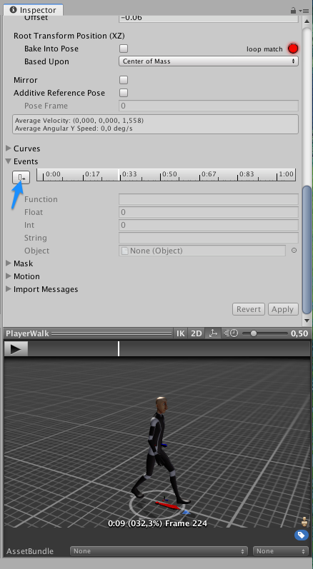
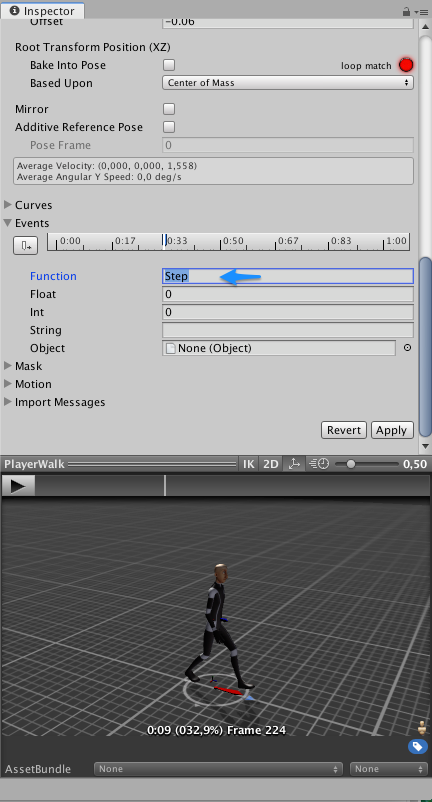
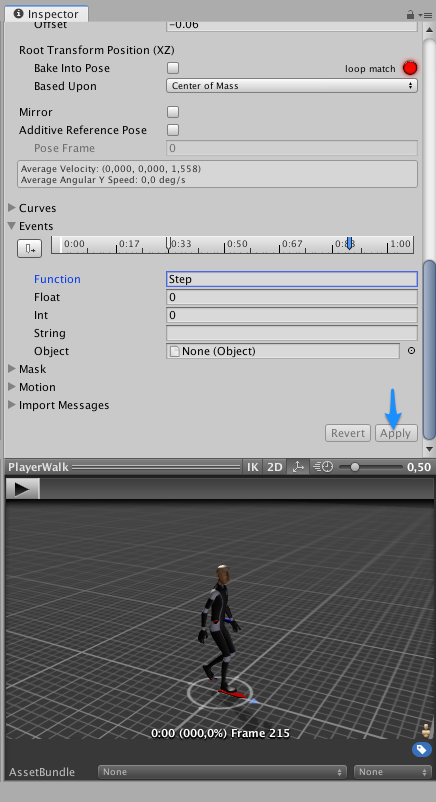
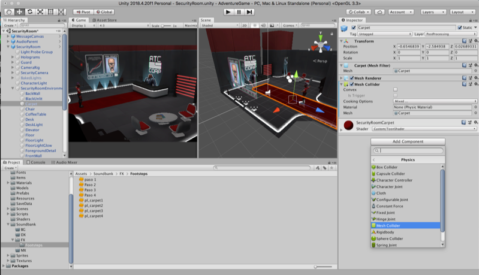

|
Este proyecto de videojuego es de tipo (Point and click) significa que toda su interacción se realiza a través el mouse y requiere hacer click en distintas zonas para moverse e interactuar con los objetos. involucra dos escenas a través de las cuales se deben recolectar algunos objetos para guardarlos en un inventario. |
Para sonorizar el videojuego primero crearemos un nuevo proyecto 3D en Unity y realizamos la importación del archivo adventureunity.package en la carpeta de assets.  Verificamos que todos los elementos estén seleccionados (All) y damos click en import.  |
Una vez que se han importado todos los elementos, vamos a la carpeta de escenas donde encontraremos las escenas “Market”, “Security Room” y “Persistent”, esta ultima es la escena principal que se encarga de manejar y cambiar entre las otras dos. Por lo tanto damos doble click para que cargue todos sus elementos en la jerarquía y luego ejecutamos dando play.  Si al ejecutar aparece el mensaje de error "Scene 'SecurityRoom' couldn't be loaded because it has not been added to the build settings or the AssetBundle has not been loaded”. Debemos primero añadir las escenas en el menú build settings de Unity.  Luego de arrastrar las escenas “market" y "security Room" podemos cerrar la ventana de Buid Settings y volver a ejecutar la escena “persistent”, ahora se deberá ejecutar sin errores como se ve en la siguiente imagen.  Para tener un mejor rendimiento y liberar recursos del equipo podemos reducir el detalle gráfico de la escena en el menú Project Settings, se desplegara una ventana donde tenemos los diferentes ajustes de calidad de la escena, podemos bajarlo a Low o Very Low. Verifique que la opción quede seleccionada y marcada con la casilla de verificación en verde.  |
Sonorizando el proyecto: Crearemos un Folder llamado “Soundbank” en la carpeta de assets para colocar todos los archivos de audio que usara el proyecto, y dentro de este podemos crear subfolder para cada categoría, principalmente Efectos (FX), Ambientes (BG), Musica (MX) y Dialogos (DX)  |
EFECTOS SONOROS DEL PROYECTO: Footsteps: Para añadir los pasos al personaje usaremos una técnica diferente a la trabajada anteriormente en clase, para este caso usaremos la animación del personaje cuando camina y definiremos dos eventos que funcionaran como triggers con cada paso del personaje. Para realizar dicha configuración nos dirigimos a la siguiente ruta: Assets/Animations/Player/Walk En el inspector se mostrara la animación de caminado. .gif) Luego en el inspector de la animación buscamos la sección de Events y desplegamos sus opciones, aparecerá una especie de linea de tiempo que estará sincronizada con el cursor de la animación.
 Luego procedemos a copiar el script AdventureFootSteps en la carpeta de scripts del proyecto. primero debemos ir a la carpeta de escenas y montar la escena security Room, luego en la jerarquía seleccionamos el objeto player que corresponde al personaje, y en el inspector añadimos un componente de tipo scripts y seleccionamos el script “AdventureFootSteps”.  El script contiene la lógica para seleccionar aleatoriamente un audioclip del array según la superficie que pisa el personaje, cada vez que se genera un evento en la animación que se configuro anteriormente. Para que el script de pasos pueda reproducir los diferentes audio clips de pasos se deberá crear un componente de tipo audiosource y asignarlo en el campo FootAudioSource.  Previamente hayamos editado las diferentes muestras de pasos, amenos 4 por superficie, copiamos los audio files en la carpeta “soundbank / footsteps y luego los arrastramos al respectivo array en el script. Como ejemplo hemos asignado 4 versiones de paso al array Default Steps, recordemos que dicho array se ejecutara por defecto para cualquier superficie que no tenga etiqueta, serán los pasos generales del personaje.  Para realizar la comprobación volvemos a la carpeta de Scenes y cargamos la escena Persistent, damos play y luego click sobre la superficie para que el personaje se mueva y la animacion accione los pasos. Ahora realizaremos la configuración para cambiar el sonido de pasos cuando el personaje este sobre la superficie de la alfombra roja. Para esto prepararemos 4 muestras de paso que copiaremos en la carpteta del banco sonoro y luego asignaremos al array “Carpeta Steps”  Luego procedemos a seleccionar el objeto Carpet correspondiente a la alfombra roja que se ve en la escena, siguiendo la ruta que se observa en la jerarquía. En el inspector del objeto Carpet agregamos un nuevo componente de tipo Physics / Mesh Collider, este permitirá detectar la colisión del personaje con la superficie.  Por ultimo agregamos a la alfombra, una etiqueta con el nombre “carpet”, esta etiqueta será el elemento que detecta el script para generar el cambio del array de pasos a carpet.    Para que el personaje actúe como un trigger y accione el cambio de pasos debemos agregar los componentes Rigibody y Capsule Collider al player y configurarlos como se observa en la imagen:  Realizamos la verificación, guardando los cambios en la escena actual y volviendo a la escena persistent, movemos el personaje y debe notarse el cambio en la sonoridad de los pasos al cambiar de superficie.  |